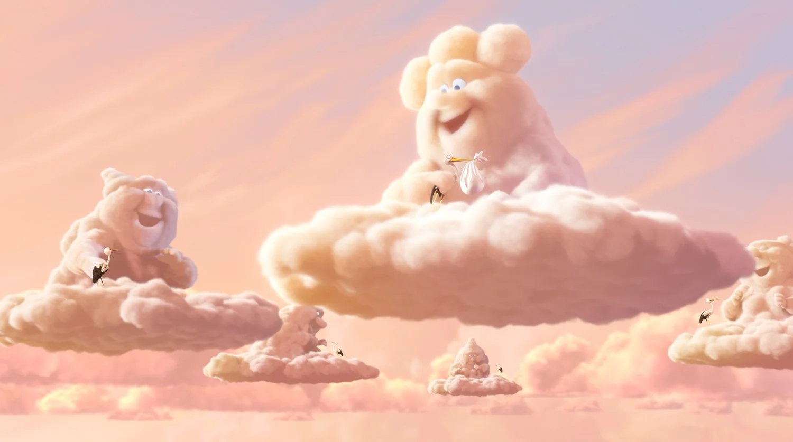

Гас
Доброе серое облако с необычным талантом. Создаёт колючих, зубастых и очень непоседливых малышей.

Маленькая история о большой дружбе: высоко над облаками.
Познакомиться с историейОткуда берутся малыши? В этом мире их создают облака, а аисты доставляют на землю. Серому облаку Гасу достаются самые необычные детёныши. Его напарнику Пеку приходится непросто: но настоящая дружба умеет справляться с трудностями.
Доброе серое облако с необычным талантом. Создаёт колючих, зубастых и очень непоседливых малышей.

Верный аист, который не сдаётся даже после самой непростой доставки.
Иногда забота: это не изменить друга, а найти способ быть рядом.
Выберите один ответ и проверьте себя.